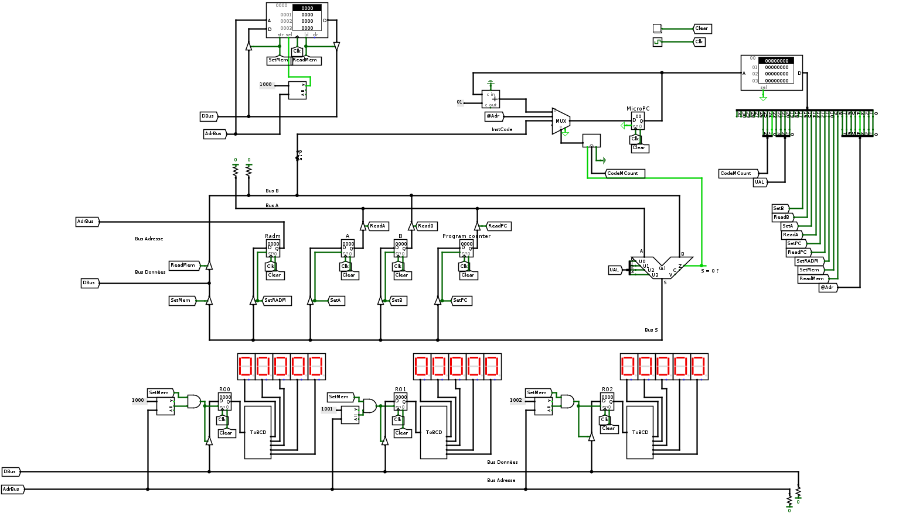
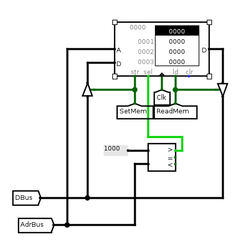
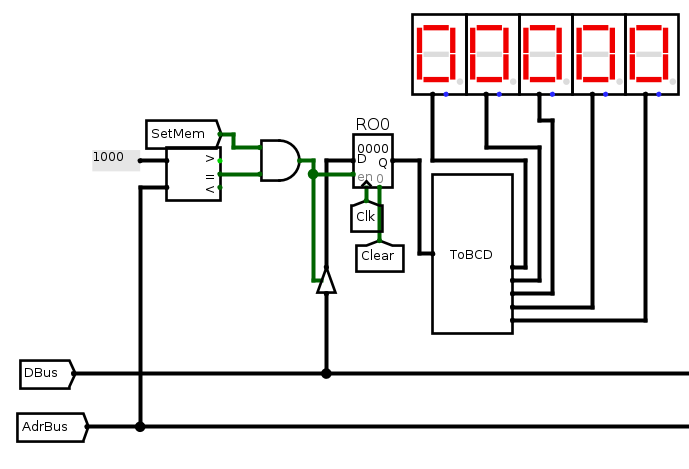
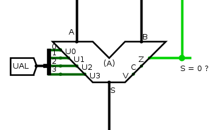
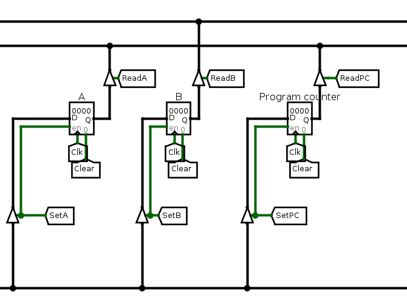
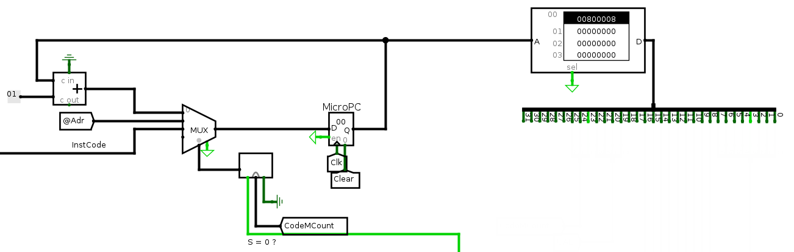

Le but de ce TL est de réaliser un séquenceur micro-programmé pour piloter notre architecture représentée ci-dessous. Nous allons voir qu'un nouveau composant est introduit, une ROM, et votre travail consiste alors à écrire le micro-code de quelques instructions dans cette ROM. Plusieurs programmes vous sont fournis pour tester votre réalisation et vous aurez également à écrire vos propres programmes en code machine. Lancez logisim et chargez l'architecture archi_sequenceur.circ ainsi que le fichier csmetz2015.jar à placer dans le même répertoire que archi_sequenceur.circ. Lisez ensuite la présentation ci-dessous avec l'architecture sous les yeux.

La mémoire RAM contient des mots de 16 bits et est adressable sur 16 bits et a donc une capacité de 128 Ko. Les opérandes et les adresses sont codées sur 16 bits. Les instructions sont codées sur un ou deux mots de 16 bits : le premier mot contient le code de l'opération et l'éventuel mot suivant contient l'opérande. Le code de l'opération est codé dans les 8 bits de poids fort d'un mot.
| 15 | 14 | 13 | 12 | 11 | 10 | 9 | 8 | 7 | 6 | 5 | 4 | 3 | 2 | 1 | 0 |
|---|---|---|---|---|---|---|---|---|---|---|---|---|---|---|---|
| Code de l'opération | Inutilisé | ||||||||||||||
| 15 | 14 | 13 | 12 | 11 | 10 | 9 | 8 | 7 | 6 | 5 | 4 | 3 | 2 | 1 | 0 |
|---|---|---|---|---|---|---|---|---|---|---|---|---|---|---|---|
| Opérande | |||||||||||||||
| Code Opération (8 bits) | Nom de l'opération | Nombre de mots | Description |
|---|---|---|---|
| 0x0c | END | 1 |
Fin du programme. |
| 0x10 | LDAi | 2 |
Charge la valeur de l'opérande dans le registre A. [A := opérande]. |
| 0x14 | LDAd | 2 |
Charge la valeur dans la RAM pointée par l'opérande dans le registre A. [A := Mem[opérande]]. |
| 0x18 | Inutilisé | ||
| 0x1c | STA | 2 |
Sauvegarde en mémoire la valeur du registre A à l'adresse donnée par l'opérande. [Mem[opérande] := A] |
| 0x20 | LDBi | 2 |
Charge la valeur de l'opérande dans le registre B. [B := opérande]. |
| 0x24 | LDBd | 2 |
Charge la valeur dans la RAM pointée par l'opérande dans le registre B. [B := Mem[opérande]]. |
| 0x28 | Inutilisé | ||
| 0x2c | STB | 2 |
Sauvegarde en mémoire la valeur du registre B à l'adresse donnée par l'opérande. [Mem[opérande] := B] |
| 0x30 | ADDA | 1 | Ajoute le contenu des registres A et B et mémorise le résultat dans le registre A.
[A := A + B] |
| 0x34 | ADDB | 1 | Ajoute le contenu des registres A et B et mémorise le résultat dans le registre B.
[B := A + B] |
| 0x38 | SUBA | 1 | Soutstrait le contenu des registres A et B et mémorise le résultat dans le registre A.
[A := A - B] |
| 0x3c | SUBB | 1 | Soutstrait le contenu des registres A et B et mémorise le résultat dans le registre B.
[B := A - B] |
| 0x40 | MULA | 1 | Multiplie le contenu des registres A et B et mémorise le résultat dans le registre A.
[A := A x B] |
| 0x44 | MULB | 1 | Multiplie le contenu des registres A et B et mémorise le résultat dans le registre B.
[B := A x B] |
| 0x48 | DIVA | 1 | Divise le contenu du registre A par deux et mémorise le résultat dans A.
[A := A / 2] |
| 0x4c | Inutilisé | ||
| 0x50 | ANDA | 1 | Calcule un ET logique entre le contenu des registres A et B et mémorise le résultat dans A.
[A := A & B] |
| 0x54 | ANDB | 1 | Calcule un ET logique entre le contenu des registres A et B et mémorise le résultat dans B.
[B := A & B] |
| 0x58 | ORA | 1 | Calcule un OU logique entre le contenu des registres A et B et mémorise le résultat dans A.
[A := A | B] |
| 0x5c | ORB | 1 | Calcule un OU logique entre le contenu des registres A et B et mémorise le résultat dans B.
[B := A | B] |
| 0x60 | NOTA | 1 | Mémorise dans A la négation de A.
[A := !A] |
| 0x64 | NOTB | 1 | Mémorise dans B la négation de B.
[B := !B] |
| 0x68 | Inutilisé | ||
| 0x6c | Inutilisé | ||
| 0x70 | JMP | 2 | Saute inconditionnellement à l'adresse donnée par l'opérande.
[PC := operande] |
| 0x74 | JZA | 2 | Saute à l'adresse donnée par l'opérande si le contenu du registre A est nul.
[PC := operande si A=0] |
| 0x78 | JZB | 2 | Saute à l'adresse donnée par l'opérande si le contenu du registre B est nul.
[PC := operande si B=0] |
| 0x7c | Inutilisé |
La mémoire contient les instructions et les données du programme à exécuter. Elle est adressable par le registre RADM (Registre d'Adresse Mémoire); Pour lire la mémoire, il faut d'abord placer l'adresse du mot mémoire à lire dans le registre d'adresse mémoire (RADM). Pour cela, il faut placer l'adresse sur le bus S, activer le registre d'adresse mémoire SetRADM=1 et activer un front montant d'horloge. En mettant la mémoire en lecture ReadMem=1, le mot mémoire à l'adresse contenue dans le registre RADM est immédiatement disponible sur la sortie.

Pour modifier le contenu de la mémoire, il faut d'abord mettre dans le registre d'adresse mémoire (RADM) l'adresse à laquelle l'information doit être stockée. Ensuite, il faut placer l'information à stocker sur le bus S, mettre la mémoire en mode écriture SetMem=1 et activer un front montant d'horloge. Le mot disponible sur l'entrée D sera alors sauvegardée à l'adresse contenue dans le registre RADM au prochain front montant d'horloge.

L'utilisation des afficheurs 7 segments se fait en adressant la mémoire à des adresses particulières. Les adresses, sur 16 bits, inférieures strict à 0x1000 adressent la RAM; Les trois afficheurs ont respectivement les adresses 0x1000, 0x1001 et 0x1002. Pour afficher une valeur sur le premier afficheur, il faut placer l'adresse 0x1000 dans le registre RADM, puis faire comme si on sauvegardait une valeur en mémoire : placer la valeur sur le bus S, mettre la mémoire en écriture (SetMem) et déclencher un front montant d'horloge.
Le composant combinatoire ToBCD (Binaire Codé Décimal) assure la traduction d'un entier codé en binaire sur 16 bits en son codage BCD sur 20 bits pour ensuite afficher chacun des 5 chiffres sur un afficheur 7 segments.
L'unité arithmétique et logique reçoit ses opérandes des bus A et B. Son opération est définie par l'état des entrées U3,U2,U1,U0. L'UAL est un circuit combinatoire donc lorsque le code opération U3U2U1U0 est définie, la sortie est "immédiatement" disponible (en réalité, modulo le temps de transit des signaux dans l'UAL). L'UAL comporte également 3 indicateurs Z, C, V:

| U3 | U2 | U1 | U0 | Opération |
|---|---|---|---|---|
| 0 | 0 | 0 | 0 | S = A |
| 0 | 0 | 0 | 1 | S = B |
| 0 | 0 | 1 | 0 | S = A ET B |
| 0 | 0 | 1 | 1 | S = A OU B |
| 0 | 1 | 0 | 0 | S = non(A) |
| 0 | 1 | 0 | 1 | S = non(B) |
| 0 | 1 | 1 | 0 | S = A + B |
| 0 | 1 | 1 | 1 | S = A - B |
| 1 | 0 | 0 | 0 | S = A + 1 |
| 1 | 0 | 0 | 1 | S = A - 1 |
| 1 | 0 | 1 | 0 | S = A * B |
| 1 | 0 | 1 | 1 | S = A >> 1 |
| x | x | x | x | S = Erreur |

Le séquenceur microprogrammé reçoit en entrée le code de l'instruction sur 8 bits (les 8 bits du poids fort du mot mémoire). Programmer le séquenceur consiste à définir la séquence des signaux (micro-instructions) pilotant le chemin de données pour chacune des instructions. La code de l'instruction (e.g. 0x10 pour LDAi) adresse directement la ROM de telle sorte que la séquence de micro-instructions pour l'instruction LDAi commence à l'adresse 0x10 de la ROM. Comme vous pouvez le remarquer, entre chaque code instruction, il y a un offset de 4 mots, ce qui veut dire que vous devez coder chaque instruction par une séquence d'au plus 4 micro-instructions. Pour remplir la ROM, il suffit de faire un clic droit sur la ROM et d'aller dans le menu "Edit Content". Attention: dans la version de logisim que nous utilisons le copier/coller est buggé; le contenu collé est malheureusement toujours collé en début de mémoire. Vous avez la possibilité d'éditer le fichier mémoire avec un éditeur de texte et de charger son contenu ensuite dans la ROM (clic droit sur la ROM, "Load image"). On va revenir sur ce point dans la partie "Conseil de mise en oeuvre" à la fin du sujet.
La disposition des instructions dans la ROM vous est imposée.

Une micro-instruction est un mot sur 32 bits, les 24 premiers bits pilotant le chemin de données, les 8 derniers bits codant une adresse essentiellement utilisée pour les branchements. Schématiquement, une micro-instruction a donc le format suivant :
| 31 | 30 | 29 | 28 | 27 | 26 | 25 | 24 | 23 | 22 | 21 | 20 | 19 | 18 | 17 | 16 | 15 | 14 | 13 | 12 | 11 | 10 | 9 | 8 | 7 | 6 | 5 | 4 | 3 | 2 | 1 | 0 |
|---|---|---|---|---|---|---|---|---|---|---|---|---|---|---|---|---|---|---|---|---|---|---|---|---|---|---|---|---|---|---|---|
| Code Mcount | Code UAL | SetB | ReadB | SetA | ReadA | SetPC | ReadPC | SetRADM | SetMem | ReadMem | Adr | ||||||||||||||||||||
Il nous reste à expliquer le rôle du champ sur 3 bits CodeMCount et de l'adresse sur 8 bits Adr. Les 3 bits CodeMCount sont combinés avec la sortie Z de l'UAL pour piloter le multiplexeur en entrée du registre d'adresse de micro-instruction MicroPC. Notons SMux la sortie du multiplexeur, le composant qui interface CodeMCount, Z et le multiplexeur agit ainsi:
Le registre micro PC est au séquenceur en ROM ce que le program counter est au programme en RAM : il permet de l'adresser et de savoir quelle micro-instruction exécuter. Pour certaines instructions (e.g. JZA), il est nécessaire de sauter plusieurs mots dans la ROM. Pour simplifier le nombre de composants, il a été choisi de préciser dans la micro-instruction l'adresse du saut:
Prenons par exemple l'instruction de chargement immédiat dans le registre A (LDAi, code:0x10). Pour exécuter cette instruction, il faut:
On vous demande d'écrire le microcode dans la ROM pour chacune des instructions présentées un peu plus haut. La méthode consiste à prendre les instructions les unes après les autres et à écrire la séquence de codes hexadécimaux permettant de réaliser l'instruction. Ces codes hexadécimaux permettent de configurer le chemin de données. Les codes d'instructions, d'UAL, ... sont synthésisés dans la carte de référence reference_card.pdf.
Pour faciliter votre travail, je vous propose ci-dessous un outil qui permet de passer des signaux de contrôle du chemin de données au code hexadécimal de la micro-instruction et vice-versa.
Comme expliqué dans la partie ci-dessous "Conseils de mise en oeuvre", vous partirez du fichier mémoire microcode_seq.rom. Vous remarquerez que la première micro-instruction est déjà mentionnée, elle permet de sauter dans la ROM à l'adresse des micro-instructions du Fetch/Decode. Les micro-instructions pour l'instruction END sont également déjà mentionnées. Pour pouvoir tester les séquences de micro-instruction que vous allez définir, vous trouverez ci-dessous quelques programmes à charger dans la RAM. Il faudra toujours cliquer sur le bouton "Clear" en haut du circuit pour remettre les registres dans leur état initial avant de tester un programme.. Je vous propose de coder les instructions dans l'ordre suivant :
Vous avez la possibilité de modifier le contenu des RAM et ROM depuis logisim. Néanmoins, je vous conseille de procéder différemment. Vous avez en effet la possibilité de charger la mémoire à partir d'un fichier. Je vous propose donc de télécharger le fichier microcode_seq.rom, de le modifier avec un éditeur de texte (gedit ou emacs par example) et de le charger ensuite en ROM. Le texte commençant par "#" sont des commentaires pour vous aider à vous repérer dans la ROM.